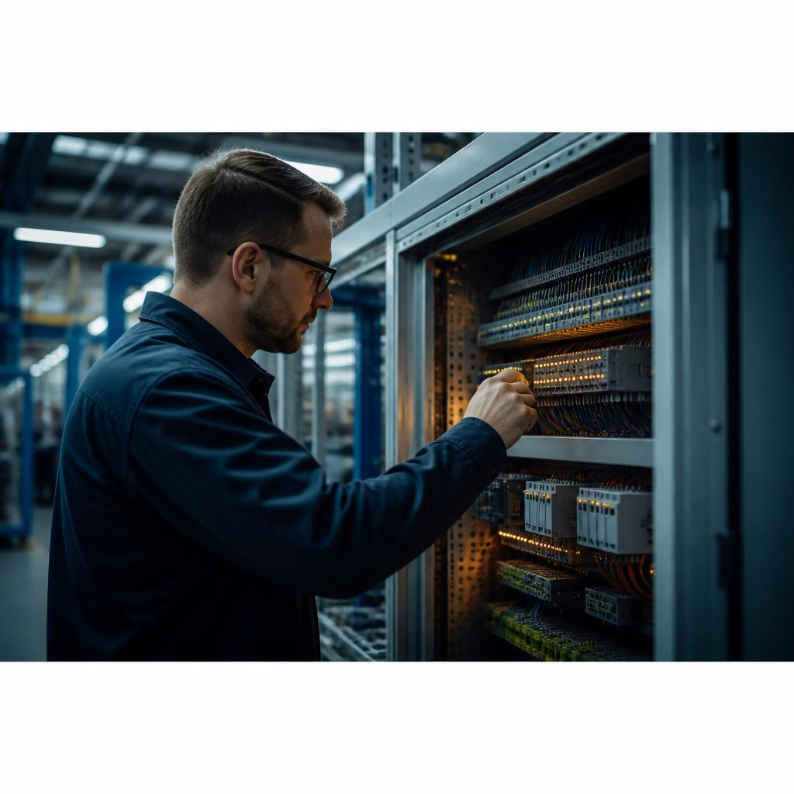

IoT development
Sensorik, Edge und Plattformen, die Maschinenzustände in klare Entscheidungen übersetzen.

Leistungen / 01
Leistungen / 01
Wir begleiten Unternehmen von der ersten Systemskizze bis zum stabilen Betrieb — pragmatisch, messbar und nah am Prozess.
Sensorik, Edge und Plattformen, die Maschinenzustände in klare Entscheidungen übersetzen.
Robuste digitale Plattformen, gebaut für Last, Sicherheit und den nächsten Produktionszyklus.
Native und hybride Produkte, die sich in reale Abläufe einfügen — nicht umgekehrt.
Interfaces mit Haltung: verständlich für Menschen, präzise für komplexe Systeme.
Räumliche Modelle für Produkte, Prozesse und Entscheidungen, bevor sie teuer werden.
Leistungen / 01
Ein Ansprechpartner für das ganze System.
Leistungen / 01
Nicht nur ein fertiges Interface, sondern ein System, das Ihr Team verstehen, erweitern und sicher betreiben kann.